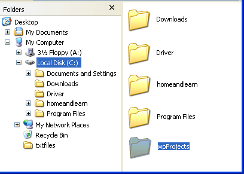

Free
computer Tutorials
|
Free
computer Tutorials
|
|
 home home |
Stay at Home and Learn | ||||
How to Create a New Folder in Windows XP
Following along from the last lesson, we'll now create a new folder using the Windows Explorer. So do the following:
A New folder will be created on your C Drive. The new folder will appear right at the bottom of all of your other folders and files, under the last one. So you might have to scroll across to see it. You can tell it's your new folder because it says, quite helpfully, "New Folder".
When you clicked "Folder", a new folder was created. But it appears right at the end of your list folders and files, in the right-hand pane of Windows Explorer. That's why you might need to scroll down or across in order to see it. But it will look like the one in the picture below: The words "New Folder" will be highlighted. It's highlighted so that you can rename it. After all, "New Folder" is not very descriptive. So go ahead and type in a new name for your folder. Type "wpProjects". As in the image below:  If nothing happens when you try to type a new name for your folder, do the following:
You have now created a new folder in the root folder of your C Drive. You can use this same technique to create a new folder inside any of the folders on your C Drive. If you make a mistake and decide you don't want this new folder, you can always choose the Delete options from the menu above, instead of Rename. But one more thing to notice about the Windows Explorer. In the left hand side, you see a lot of plus signs in a square box. Clicking one of these plus signs will expand your selection. The image on the left below show a plus sign before it is clicked, and on the right afterwards.
The plus sign turns into a minus sign. But the plus sign indicates that there are more folders inside the one that has the plus sign. When you click the plus sign, it will expand to show you all the folders inside a main folder. You can click on any of these folders to see what is inside it. As for the files inside the folders - try double clicking on one and see what happens. Don't worry: you won't do any harm! What we're going to do now is to move that new folder we just created, and put it inside our "My Documents" folder. We'll start that in the next part.
<--Back One Page Move on to the Next Part--> <--Back to the Beginner's Computing Contents Page View all our Home Study Computer Courses
|
|||||
|